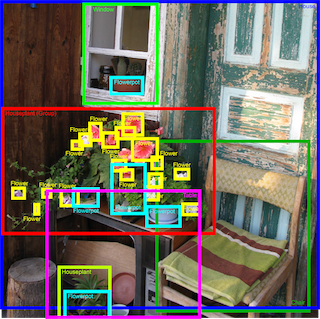

10 Artificial Intelligence Project Ideas for Beginners [2024]
Explore exciting and innovative artificial intelligence project ideas to
kickstart your journey into the world of AI and Deep Learning | ProjectPro
Last Updated: 11 Apr 2024 | BY AI-NEXUS
In this space, we will explore the most innovative and impactful Artificial Intelligence projects, from cutting-edge
research to real-world applications. Whether you're a tech enthusiast or simply curious about the future of AI, you'll
find plenty of exciting ideas and insights to inspire you. Let's dive in!
Artificial Intelligence has made a significant impact on our daily lives. Every time you scroll through social media, open Spotify, or do a quick Google search,
you are using an application of AI. The AI industry has expanded massively in the past few years and is predicted to grow even further, reaching around 126 billion U.S. dollars by 2025.
Multinational companies like IBM, Accenture, and Apple are actively hiring AI practitioners. The median salary of an AI engineer as of 2021 is $171, 715 that can go over $250,000.
The field of AI is vast, and there are many areas within the industry that you can choose to specialise. Say , if you are intrigued by facial recognition systems and image generation,
you can choose to work in the field of computer vision. If you’d like to build models that can converse with people and learn human language, you can work in the field of NLP.
Recruiters spend a lot of time skimming through resumes to find the best candidate for a
job position. Since there can be hundreds of applications for a single position, this
process has been automated in several ways - the most common is keyword matching.
Resumes are shortlisted and read by the recruiters based on a set of keywords found
in a candidates resume.
Otherwise, the resume is discarded, and the candidate is rejected for the job. However,
this screening process has many drawbacks. Candidates are aware of the keyword matching
algorithm, and many of them insert as many keywords as possible into their resumes to get shortlisted by the company.
You can build a resume parser with the help of artificial intelligence and machine learning techniques that
can skim through a candidate’s application and identify skilled candidates, filtering out people who fill their resume with unnecessary keywords.
You can use the Resume Dataset available on Kaggle to build this model. This dataset contains only two columns — job title and the candidate’s resume information.
The data is present in the form of text and needs to be pre-processed
. You can use the NLTK Python library for this purpose. Then, you can build a clustering
algorithm that groups closely related words and skills that a candidate should possess
in each domain. Words that are similar in context (and not just keywords) should be considered.
You can assign a final weightage score to each resume — from 0 (least favourable) to 10
(most favourable). This is the most beginner-friendly project if you want to learn AI.
2. Fake News Detector Project in AI
Fake news is misleading or false information that is circulated as news. It is often difficult to distinguish between fake and real news, and it isn’t until the situation gets blown out of proportion that it comes to light. The spreading of fake news becomes especially dangerous during times like elections or pandemic situations.
Fake rumours and misinformation that pose harm to human lives are threatening to people and the society.
Fake news needs to be detected and prevented early, before it causes panic and spreads to a large number of people.
For this very interesting project, you will build a fake news detector, you can use the Real and Fake News dataset available on Kaggle.
You can use a pre-trained machine learning model called BERT to perform this classification. BERT is a Natural Language Processing (NLP) model that has been made open-source. You can load BERT into Python and just add one additional output layer for your text classification task.
3. Improved Detection of Elusive Polyps
This AI project showcases how Google leverages machine learning to assist gastroenterologists (GIs) in the fight against colorectal cancer by enhancing the efficiency of colonoscopies.
The project aims to create a machine learning model that will aid the GI in detecting polyps in the area under observation, thereby overcoming the problem of incomplete detection. The developed CNN model relies on an architecture that integrates temporal logic with a single frame
detector to get more precise outcomes. This project involves working on two different Neural Network architectures- RetinaNet and LSTM-SSD.
4. Instagram Spam Detection
Have you ever received a notification that someone commented on your Instagram post? You excitedly pick up your phone and open the app only to find that it’s a bot promoting some knockoff brand of shoes. The comment section of many Instagram posts is filled with bots.
They can range from annoying to dangerous, depending on the type of call to action they require from you.You can build a spam detection model using AI techniques to identify the difference between spam and legitimate comments.
You might not be able to find a dataset that has a collection of Instagram spam comments, but you can collect the data for this analysis by scraping the web. Access the Instagram API with Python to get unlabelled comments from Instagram.
You can use a different set of data for training, like Kaggle’s YouTube spam collection dataset. Then, use keywords to classify words that commonly appear in spam comments.
Use a technique like N-Gram to assign weightage to words that tend to appear in spam comments, then compare those words with each scraped comment from the web. Another approach you can take is the use of a distance-based algorithm like cosine similarity.
These approaches will yield better results based on the type of pre-processing you apply.
If you remove stop-words, whitespaces, punctuation and clean the data correctly, you will find that the algorithm performs better as it can match similar words with each other.
You can also use a pre-trained model like ALBERT for better results. While distance or weightage matching algorithms work well in finding similar words, they are unable to grasp the context of a sentence.
5. Object Detection System
You can demonstrate skills in the field of computer vision with this project. An object
detection system can identify classes of objects present within an image by utilizing
computer vision techniques in the background.
For example, suppose an image contains a picture of you working on a laptop. In that case, an object detection system
should be able to identify and label you (human) and the computer, along with your position in the image.
You can use Kaggle’s Open Images Object Detection dataset for this project. There is a pre-trained object detection model that has been made open-source called SSD. This model was trained on a dataset of everyday objects called COCO and can identify things like tables, chairs, and books.
You can further train the output layer of this model on the Kaggle Open Images dataset to build your object detection system with high accuracy.

Completed AI Projects
1.Animal Species Prediction
Another interesting computer vision project you can do is to predict an animal’s species based on an image. You can do this with the Animals-10 dataset on Kaggle.
There are ten different categories of animals in this dataset — dog, cat, horse, spider, butterfly, chicken, sheep, cow, squirrel, elephant.
This is a multi-class classification problem, and you will need to predict the species of the animal based on its picture in the dataset.
You can use a pre-trained model called VGG-16 for this purpose. You can load this model into Python with the Keras library.
VGG-16 is a Convolution Neural Net (CNN) architecture trained on ImageNet, which contains over 14 million images. It consists of pictures of everyday objects, fruits, vehicles, and certain species of animals.
After loading the VGG-16 model into Python, you can train on top of it with the labelled images in the Kaggle dataset to classify the ten different types of animals.
2. Teachable Machine
If you are an AI enthusiast, you’ve probably heard about Google’s Teachable Machine. Teachable Machine is a web-based tool that was created to make machine learning accessible to everyone.
If you visit Google’s Teachable Machine site, they allow you to upload pictures of different classes and then train a client-side machine learning model on these pictures.
An example of how Teachable Machine works:
There are two classes of images you need to upload. First, you upload around 100 pictures of yourself and label them as Class 1. Then, you upload another 100 photos of your cat and label it as Class 2.
Then, you click on the “Train Model” button, and a client-side machine learning model will learn to distinguish between pictures of you and your cat. You can then use this model to make new predictions on images.
3. Real-time Face Mask Detector
We have all been wearing masks for almost two years due to the Covid-19 outbreak. Many public places, including shopping malls, theatres, and restaurants, refuse to admit anyone who isn't wearing a mask.
The goal of the research is to build a custom deep learning model to identify whether someone is wearing a mask or not. For creating the face mask detection model, use the face mask dataset available on Github. There are 1,376 photos in this collection, divided into two categories: with masks and without masks. In this project, you'll learn how to use Keras and TensorFlow to train a classifier that can automatically detect whether or not someone is wearing a mask. You can fine-tune the MobileNet V2 architecture using pre-trained ImageNet weights.
4. Fuel Efficiency Prediction
This project on artificial intelligence aims to forecast the outcome of a constant value, such as a price or a probability. Build a model that predicts vehicle fuel efficiency using the Auto MPG dataset, one of the most well-known datasets among machine learning practitioners. You need to give the model descriptions (including the number of cylinders, displacement, horsepower, weight, etc.) of various vehicles from a specific period. Using the Python pandas package, import the data. Make two sets of data: one for training and one for testing. Use the seaborn library's pairplot() method to visualize the data. Build your prediction model using the sequential API with two hidden layers and one output layer that will return a single value.
5. Plant Disease Classifier
In this AI project, you will create an AI application that can detect plant illnesses by implementing a deep learning model. You will use the Pytorch framework and a Convolutional Neural Network (CNN) architecture to implement the deep learning model.
Image Classifier for Plant Species Identification
Train the image classifier to distinguish the various plant diseases by looking at a picture. You can use this classifier to create a phone app that tells you what kind of disease your camera looks at. This project uses the "Plant Village" dataset that includes 38 plant disease classes and one background class from the open dataset of background images from Standford.